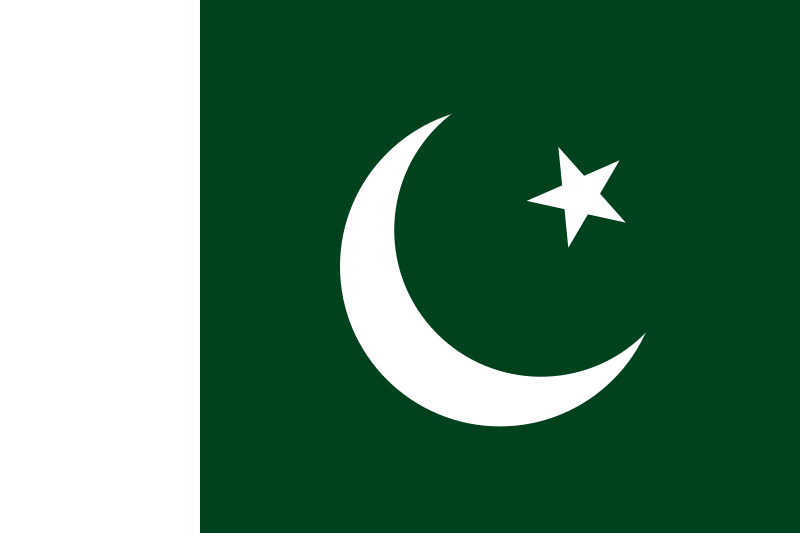
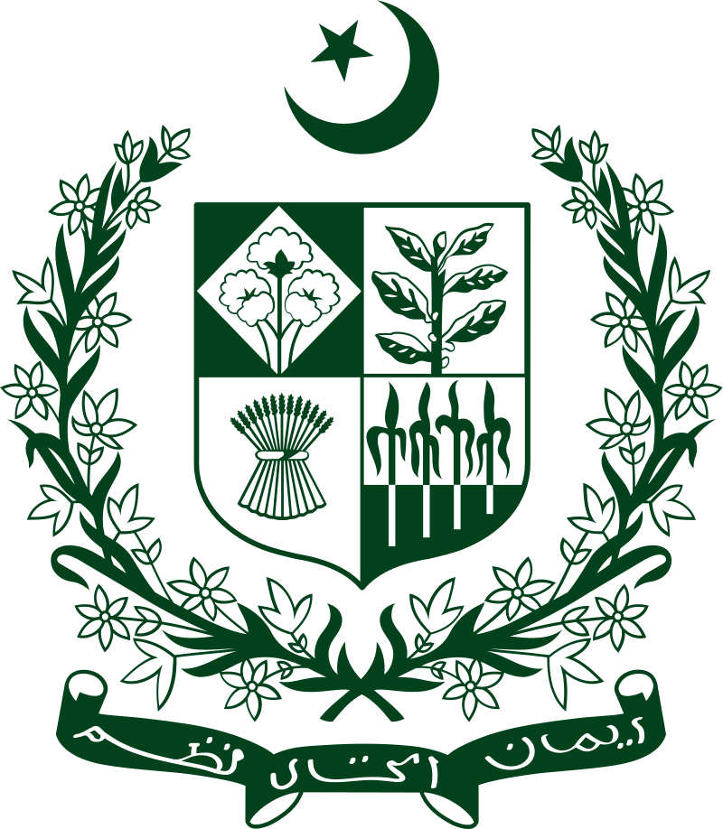
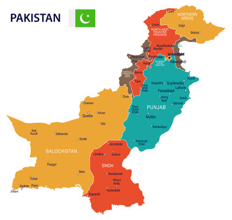
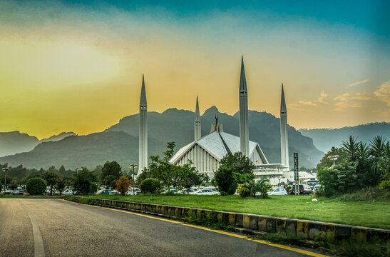
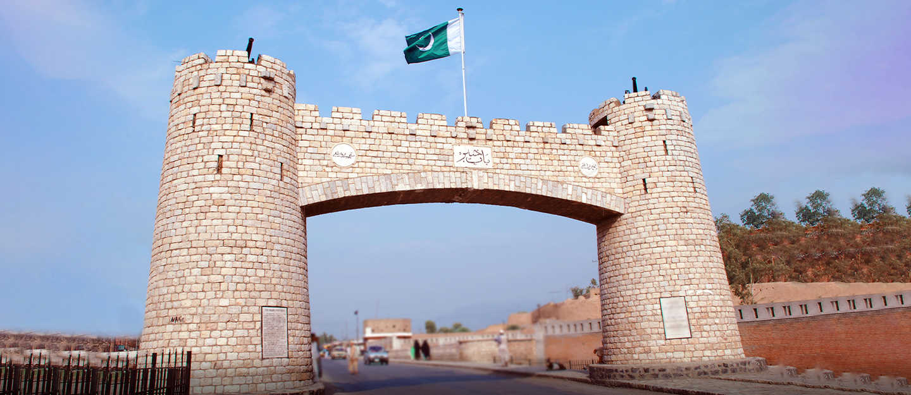

Ilove My Country Pakistan
Pakistan Is The Most Beautifull Country In South Asia



Pakistan,officially the Islamic Republic of Pakistan, is a country in South Asia.
It is the fifth-most populous country, with a population of over 241.5 million,
having the largest Muslim population as of 2023. Islamabad is the nation's capital,
while Karachi is its largest city and financial centre. Pakistan is the 33rd-largest country by area,
being the second largest in South Asia. Bounded by the Arabian Sea on the south,
the Gulf of Oman on the southwest, and the Sir Creek on the southeast, it shares land borders with India to the east;
Afghanistan to the west; Iran to the southwest; and China to the northeast. It shares a maritime border with Oman in the Gulf of Oman,
and is separated from Tajikistan in the northwest by Afghanistan's narrow Wakhan Corridor.
Lets Visit The Most Beautiful City's in Pakistan



Karachi The City Of Lights
Islamabad The Green City
Lahore The City of Gardens



Quetta The Fruit Garden of Pakistan
Multan,the City of Saints, House of Gold
Peshawar City of Flowers
Pakistan is the site of several ancient cultures, including the 8,500-year-old Neolithic site of Mehrgarh in Balochistan,the Indus Valley civilisation of the Bronze Age,
and the ancient Gandhara civilisation. The regions that comprise the modern state of Pakistan were the realm of multiple empires and dynasties, including the Achaemenid, the Maurya,
the Kushan, the Gupta; the Umayyad Caliphate in its southern regions, the Samma, the Hindu Shahis, the Shah Miris, the Ghaznavids, the Delhi Sultanate, the Mughals,and most recently, the British Raj from 1858 to 1947.
Spurred by the Pakistan Movement, which sought a homeland for the Muslims of British India, and election victories in 1946 by the All-India Muslim League, Pakistan gained independence in 1947,
after the Partition of the British Indian Empire, which awarded separate statehood to its Muslim-majority regions and was accompanied by an unparalleled mass migration and loss of life.Initially a Dominion of the British Commonwealth,
Pakistan officially drafted its constitution in 1956, and emerged as a declared Islamic republic. In 1971, the exclave of East Pakistan seceded as the new country of Bangladesh after a nine-month-long civil war. In the following four decades,
Pakistan has been ruled by governments whose descriptions, although complex, commonly alternated between civilian and military, democratic and authoritarian, relatively secular and Islamist. Pakistan elected a civilian government in 2008,
and in 2010 adopted a parliamentary system with periodic elections.Pakistan is a middle power nation, and has the world's sixth-largest standing armed forces. It is a declared nuclear-weapons state, and is ranked amongst the emerging and
growth-leading economies,[28] with a large and rapidly-growing middle class. Pakistan's political history since independence has been characterised by periods of significant economic and military growth as well as those of political
and economic instability. It is an ethnically and linguistically diverse country, with similarly diverse geography and wildlife. The country continues to face challenges, including poverty, illiteracy, corruption and terrorism. Pakistan
is a member of the United Nations, the Shanghai Cooperation Organisation, the Organisation of Islamic Cooperation, the Commonwealth of Nations, the South Asian Association for Regional Cooperation, and the Islamic Military Counter-Terrorism Coalition,
and is designated as a major non-NATO ally by the United States.